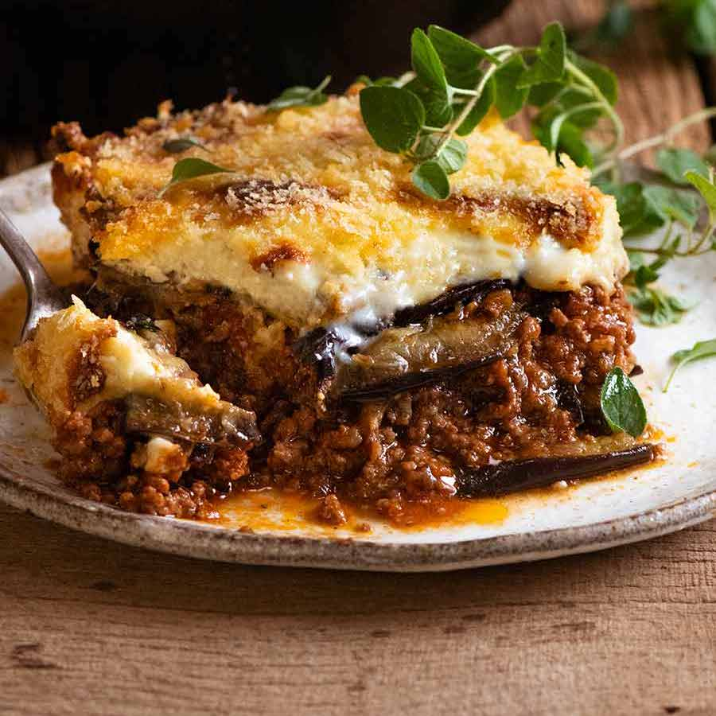

Moussaka

Greek Moussaka recipe – A delicious taste of Greece
Greek Moussaka (mousaka) is without a doubt, Greece’s most popular, traditional dish! You’ll be hard pressed to find a taverna that doesn’t serve it or a household that doesn’t make it on special occasions!
So what is Moussaka? Moussaka is a traditional Greek eggplant casserole made with baked or pan fried eggplants (aubergines) and potatoes, a rich, tomatoey beef or lamb mince sauce and topped off with a deliciously creamy bechamel sauce. In other words, the ultimate comfort food.
This is my very best, traditional Moussaka recipe. To make it easy for you to make the best Moussaka.
Ingredients
Eggplant
- 1 kg / 2 lb eggplant (aubergines)
- 1 tsp salt
- 2-3 tsp olive oil
Filling
- 1 tbsp olive oil
- 1 onion , diced (brown, white, yellow)
- 3 garlic cloves , minced
- 1.4 lb / 700 g ground beef or lamb (mince)
- 1/2 cup red wine , dry (optional)
- 14 oz /400g crushed tomatoes
- 3 tbsp tomato paste
- cup beef broth/stock
- 1 beef bouillon cube , crumbled (or 1 tsp powder)
- 2 bay leaves
- 1.5 tsp sugar (any)
- 2 tsp dried oregano
- 1/2 tsp cinnamon (or 1 stick, use whole)
- 3/4 tsp salt
Bechamel
- 4 tbsp (60g) butter
- 5 tbsp plain flour
- 2 1/2 cups milk (any fat %)
- 1/4 tsp nutmeg, freshly grated (optional)
- 1/2 cup parmesan cheese, grated (or Kefalotiri Cheese)
- 1 egg
- 1 egg yolk
- 1 1/4 tsp Vegeta, vegetable or chicken stock powder (or salt)
- 1/4 tsp pepper
Step-by-step
Eggplant
- Place eggplant slightly overlapping in a large colander. Sprinkle with some salt. Repeat with remaining eggplant.
- Leave to sweat for 30 minutes. Meanwhile, make Meat Sauce and Béchamel Sauce.
- Preheat oven to 240C/450F.
- Pat eggplant dry - make sure to do this well, otherwise it's too salty. Lay on parchment paper lined trays (you might need 3 trays, work in batches), brush with oil.
- Bake 15 - 20 minutes or until lightly browned and softened . Remove and set aside to cool slightly.
Meat sauce
- Heat olive oil in a large skillet or pot over high heat, then cook the garlic and onion for 2 minutes.
- Add the beef or lamb and cook until it changes from pink to brown, breaking it up as you go.
- Add wine, cook for 1.5 minutes or until alcohol smell is gone.
- Add remaining ingredients and stir to combine. Bring to a simmer, then lower heat to medium low and cook for 15 minutes, or until reduced to a thick sauce.
Bechamel Sauce
- Melt butter in a pan over medium heat. Add flour and cook for 1 minute, stirring constantly.
- Stirring constantly, slowly add the milk. Then stir regularly for 3 to 5 minutes or until it thickens so that it thickly coats the back of a wooden spoon (see video / step photos).
- Remove from the stove and whisk in cheese, nutmeg, vegetable/stock powder (or salt) and pepper.
- Allow to cool for 5 minutes, then whisk the eggs in. Cover with lid until required.
Assemble
- Lower oven to 180C/350F (all oven types).
- Place half the eggplant in the bottom of a baking dish (I used my 26cm/9" Lodge skillet), then top with all the Filling.
- Top with remaining eggplant, then pour over the Béchamel Sauce, sprinkle with breadcrumbs.
- Bake for 30 - 40 minutes or until golden brown. Allow to stand for 10 minutes before serving.